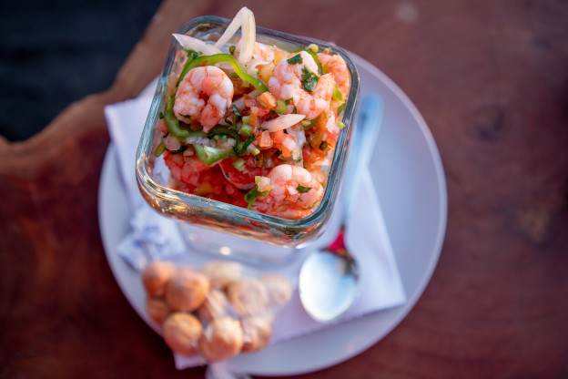

Shrimp Cocktail Recipe

Description
Fresh and juicy shrimps perfectly cooked This is a very easy to do dish and an easter classic, in tune with the summer and vacations!
Ingredients
- 3/4 kg of raw peeled shrimp
- 1/4 onion
- 2 garlic cloves
- 2 laurel leaves
- 8 black peppers
- 1 teaspoon of salt
- 1.5 cups of ketchup sauce
- 1/3 cup of lemon juice
- 1/4 spoon of olive oil
- 1/2 cup pf orange soda
- 2 or 3 chipotle peppers
- 1/4 cup of chopped onion
- 1/2 cup of chopped cilantro
- 1/4 teaspoon of "Maggi" sauce
- 1 teaspoon of Worcestershire sauce
- 1 chopped avocado
Instructions
- Boil 1.25 L of water
- Add the onion, the garlic cloves, the laurel leaves, the black peppers and the salt
- Mix them together and let them boil for approximately 10 minutes
- Add the Shrimps to the mixture
- When the color of the shrimps changes from white to a clear pink wait 2.5 more minutes
- After that the shrimps should be ready, taste one to be sure
- Drain the shrimps with the aid of a colander, save a cup of the water
- Remove the onion and garlic lefts and put the shrimps in cold water to stop the cooking
- Wait and put the cooked shrimps in a bowl
- Mix the chipotle peppers and the orange soda in the blender until its milled
- In a bowl mix the ketchup, the previous mixture and the shrimp water
- In the same bowl add the lemon juice, the "Maggi" sauce and the Worcestershire Sauce
- Mix the previous ingredients until it look homogeneous
- Add the chopped onion, cilantro and the shrimps
- Then ad the olive oil and mix
- Finally add the chopped avocado
- The recipe is READY!!!